Utkání v basketbalu je v současné době rozhodováno dvěma nebo třemi rozhodčími, kteří mají pravidly hry vymezená práva a povinnosti, kritéria konzistence rozhodování a mechaniku pohybu po hřišti. V rámci ŠTV je utkání rozhodováno jedním rozhodčím, zpravidla vyučujícím předmětu tělesná výchova. V rámci rozhodování basketbalu řešíme z pohledu rozhodčího problematiku chyb a přestupků, přičemž její základní zvládnutí by mělo přispět k cíli publikace – umožnit rozhodovat utkání basketbalu na dané úrovni.
Každé rozhodnutí je ve funkci rozhodčího v utkání prezentováno ve třech krocích =
Základní signál při přestupku Základní signál při chybě
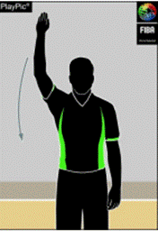 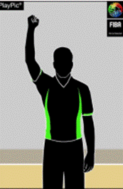
Základní typy chyb a jejich
specifikace
Definice - chyba je porušení pravidel zahrnující nedovolený kontakt hráče se soupeřem a nebo nesportovní chování.
Pro účely publikace se budeme zabývat hlavně chybami souvisejícími s první uvedenou kategorií = fyzickým kontaktem, který je pro ŠTV typičtější. Dovednost poznat a správně odpískat chybu je v utkání klíčová, můžeme říci, že je to alfa a omega umění rozhodovat basketbal. Hráč musí po 5 chybách odstoupit z utkání a jeho místo zaujme náhradník, pro ŠTV doporučujeme v kontextu délky utkání využívat nižší počet chyb. Po 4 chybách v dané čtvrtině je družstvo v trestu a každá jeho následná chyba je trestána 2 trestnými hody – do ŠTV rovněž doporučujeme snížit počet chyb dle časové délky utkání či případně zkrátit vzdálenost trestného hodu (“šestky”) od koše..
DRŽENÍ (1)
Je nepovolený kontakt se soupeřem, kterému bráníme ve volném pohybu po hřišti a který se odehrává zpravidla za pomoci rukou. V případě uvedené chyby rozhodčí zapíská, vzpaží ruku sevřenou v pěst a následně uchopí jí uchopí druhou nataženou rukou v oblasti zápěstí či mírně nad ním.
STRKÁNÍ (2)
Je nedovolený kontakt se soupeřem, při němž zpravidla bránící hráč se pomocí rukou pokouší násilně pohnout se soupeřem s míčem či bez míče. V případě uvedené chyby rozhodčí zapíská, vzpaží ruku sevřenou v pěst a následně předpaží obě ruce s otevřenými dlaněmi.
NEDOVOLENÁ HRA RUKOU (3)
Je nedovolený pohyb ruky, která je zpravidla položena na soupeře s míčem či bez míče se snahou zajistit si kontrolu jeho pohybu či mu ji ztížit. V případě uvedené chyby rozhodčí zapíská, vzpaží ruku sevřenou v pěst a následně uchopí druhou pokrčenou ruku s otevřenou dlaní zpravidla seshora v oblasti zápěstí či mírně nad ním a provede takto pohyb ruky vpřed. Signalizace se v praxi mírně odlišuje od verze v pravidlech basketbalu.
NEDOVOLENÝ KONTAKT NA RUKU (4)
Je nedovolený kontakt se soupeřem, při němž se bránící hráč zpravidla snaží zablokovat střelecký pokus a místo míče zasáhne předloktí střílejícího hráče. V případě uvedené chyby rozhodčí zapíská, vzpaží ruku sevřenou v pěst a následně naznačí úder dlaní na předloktí druhé ruky dle obrázku.
1
2
3 4 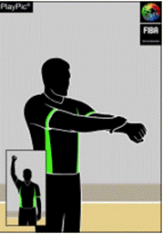 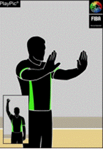 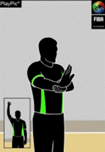 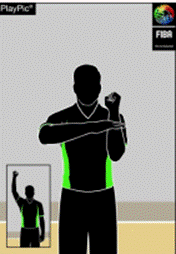
BLOKOVÁNÍ (5)
Je nedovolený kontakt, který brání soupeři v pohybu s míčem či bez míče a odehrává se zpravidla pomocí trupu, nohou a za pohybu bránícího hráče. V případě uvedené chyby rozhodčí zapíská, vzpaží ruku sevřenou v pěst a následně na chvilku přiloží obě ruce na své boky. V praxi se tato chyba často signalizuje se sevřenými pěstmi a dynamickým pohybem rukou.
HÁKOVÁNÍ (6)
Je nedovolený kontakt se soupeřem, při němž hráč ovine svoji ruku kolem soupeře a získává tak výhodu při driblinku, v souboji o pozici u podkošových hráčů. V případě uvedené chyby rozhodčí zapíská, vzpaží ruku sevřenou v pěst a následně naznačí pohyb ruky s otevřenou dlaní směrem dozadu za osu svého trupu.
ÚDER DO HLAVY (7)
Je nedovolený kontakt se soupeřem, při němž bránící hráč zpravidla při střeleckém pokusu soupeře a své snaze o blokování míče způsobí kontakt na hlavu útočícího hráče. Tato chyba může eskalovat chování hráčů, a proto je nutné ji včas odpískat. Rozhodčí zapíská, vzpaží ruku sevřenou v pěst a následně naznačí kontakt na hlavu.
5
6
7
8
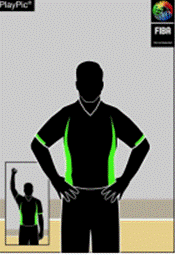 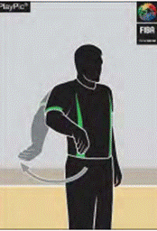 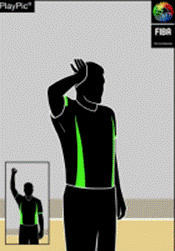 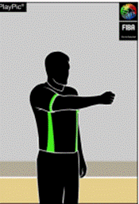
Výše uvedené typy osobních chyb hráče se týkají v naprosté většině činnosti bránícího družstva. Dojde-li k chybě útočícího družstva (tzn. družstva majícího míč pod kontrolou), rozhodčí zapíská, použije základní signál vzpažené ruky v pěst a následně ruku stále sevřenou v pěst sklopí směrem ke koši útočícího družstva. Typickými situacemi jsou clonění hráče, kdy clona není statická či je postavena pozdě vůči pohybu obránce, hákování, prorážení s míčem (8).
S chybou hráče souvisí další klíčové téma rozhodování basketbalu = trestné hody a jejich počet. Zahájí-li hráč úspěšný střelecký pohyb na koš a je faulován, koš platí a následuje jeden trestný hod. Nedosáhne-li koše, hází se dva nebo tři trestné hody podle místa odkud bylo vystřeleno. Je-li osobní chyba odpískána na rozmezí pohybu před a při střelbě, je nutno hned ukázat střelecký (9) či ne střelecký faul (natažená ruka se sklopí k palubovce). Ve ŠTV doporučujeme verbální komentář daného rozhodnutí.
9
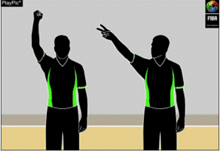
Zvláštní chyby
OBOUSTRANNÁ CHYBA (10)
Je situace, kdy se dva soupeři dopustí stejného typu osobní chyby proti sobě navzájem přibližně ve stejné době. Chyby se uvedou hráčům do zápisu o utkání, má-li nějaké družstvo míč pod kontrolou, pokračuje z nejbližšího místa provinění vhazováním. Není-li kontrola míče žádným družstvem, nastává situace rozskoku. Typickou situací může být souboj podkošových hráčům o postavení poblíže území trestného hodu či přímo v něm. Rozhodčí zapíská a signalizuje chybu máváním rukou sevřených v pěst nad hlavou s 2-3x opakováním.
ŠTV - tuto chybu spíše nedoporučujeme aplikovat, její odpískání může někdy evokovat i nerozhodnost rozhodčího určit, který hráč se jako první dopustil osobní chyby.
TECHNICKÁ CHYBA (11)
Je nekontaktní povahy a zpravidla ji způsobí hráč jako výraz nespokojenosti / frustrace s verdiktem rozhodčích a to buď slovním komentářem či nezdvořilým gestem směrem k nim či případně k soupeři. Trestem je 1 trestný hod, při kterém se se střela nedoskakuje a hra poté pokračuje tak, jak byla přerušena. Rozhodčí zapíská a ukáže na rukou písmeno T s dlaní vpřed.
ŠTV - situace má v praxi mnoho modifikací, které cíleně neuvádíme, před udělením technické chyby obecně doporučujeme varování hráče verbální komunikací a teprve poté využití této chyby.
NESPORTOVNÍ CHYBA (12)
Základním smyslem využití této chyby je progresivní trestání hrubé hry, tzn. např. kontaktu na hráče, kdy už není možnost získat obráncem míč (zezadu), úderu do hlavy, chycení protihráče dvěma rukama atd. Trestem jsou vždy 2 trestné hody a vhazování míče na čáře pro vhazování v přední polovině hřiště. V případě udělení nesportovní chyby rozhodčí zapíská, vzpaží ruku sevřenou v pěst a následně ji uchopí druhou rukou za zápěstí. V praxi se používají 4 kritéria, dle kterých lze tuto chybu hráči udělit.
DISKVALIFIKUJÍCÍ CHYBA (13)
Je udělována za výrazně nesportovní chování (zpravidla vulgarismus) či nadměrný fyzický kontakt (strčení do hráče v přerušené hře, úder pěstí …). Trestem jsou dva trestné hody a vhazování z čáry pro vhazování. Při jejím udělení rozhodčí zapíská a zvedne obě ruce sevřené v pěsti nad hlavu = slangově se používá pro tento typ chyby výraz “parohy”.
10
11
12 13
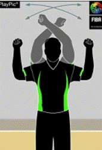 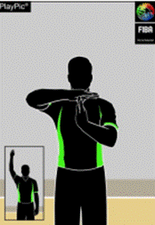 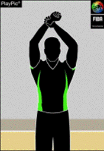 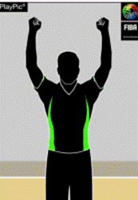
Základní přestupky a jejich
specifikace
Definice = jedná se porušení pravidel hry vzniklé nekontaktním způsobem s následným trestem pro provinivší se družstvo = ztrátou míče a vhazováním soupeře z nejbližšího místa na hřišti s výjimkou prostoru za deskou koše.
DRŽENÝ MÍČ – SITUACE ROZSKOKU (14)
Každé utkání v basketbalu začíná rozskokem mezi dvěma hráči různých družstev ve středovém kruhu. Rozhodčí vyhodí míč vertikálně mezi dva soupeře, a to výše než mohou dosáhnout (doporučujeme přibližně 1 m nad dosah hráčů). Po kulminaci míče mohou skákající hráči míč udeřit směrem ke spoluhráčům stojícím okolo středového kruhu, kteří se mohou začít pohybovat až po kontaktu skákajících hráčů s míčem. Skákající hráč nesmí míč chytit, může ho maximálně 2x tečovat. Dojde-li na hřišti k situaci rozskoku, rozhodčí zapíská, vzpaží ruku s otevřenou dlaní a následně předpaží obě ruce se vztyčenými palci. Poté ukáže směr hry dle šipky alternativního procesu. V rámci basketbalového utkání nám šipka rovněž určuje směr vhazování na začátku každé čtvrtiny utkání, přičemž vhazující hráč se musí postavit obkročmo nad středovou čáru a následně tak může přihrát spoluhráči do obou polovin hřiště.
Alternativní držení míče – v basketbalu provádíme jediný rozskok na úvod utkání. Pro případy potřeby dalšího vzniklo pravidlo alternativního držení míče, které velmi zefektivnilo opakující se rozskoky zejména u dětí, mládeže. Družstvo, které nezískalo kontrolu míče po úvodním rozskoku, je oprávněno k následnému alternativnímu vhazování míče z místa nejbližšího přestupku. Situace zpravidla plyne z drženého míče dvou protihráčů, kdy už je nutné zapískat, ukázat signalizaci rozskoku a dle šipky na stolku rozhodčích přiznat vhazování oprávněnému družstvu. Druhou nejčastější variantou je, pokud spadne míč do zámezí a tečují ho oba hráči současně anebo si rozhodčí není jistý, kdo míč tečoval jako poslední. Tuto variantu se snažíme co nejvíce omezit, neboť může evokovat nejistotu v rozhodování utkání.
ŠTV - do středového kruhu pro provedení rozskoku vstupujeme tehdy, až jsou-li hráči rozestaveni kolem středového kruhu, po hřišti a jsou statičtí. Píšťalku si nedáváme do úst jako prevenci zranění obličeje, zubů z důvodu pohybu rukou u hráčů podílejících se na rozskoku. Rozskok je vhodné si nacvičit, nepovede-li se, co nejdříve zapískáme, hru zastavíme a rozskok zopakujeme. Totéž uděláme i v případě, pokud by míč spadl na zem bez dotyku skákajících hráčů. Necvičící žáky můžeme využít k nastavování (evidenci, zápisu) alternativního držení míče („šipky“). .
KROKY (15)
Hráč může principiálně vykonat s drženým míčem na místě maximálně jeden krok a to i opakovaně kolem obrátkové /pivotmanské nohy/. Chytí-li míč v pohybu či zakončuje-li pohyb a to zpravidla střeleckým pokusem /"dvojtakt"/ či méně často přihrávkou, může provést dva kroky. Při porušení uvedeného rozhodčí zapíská, vzpaží ruku s otevřenou dlaní a následně provede 2-3x klidnou rotaci předloktí směrem vpřed před tělem se sevřenými pěstmi.
ŠTV - doporučujeme vyšší míru tolerance při mírném posunutí nohou jak na místě, tak při pohybu a to zejména po chycení míče nebo při zahájení driblinku tak, aby hra měla náležitý spád a nebyla často přerušována. Princip = kroky bez podstatného vlivu na hru nepískáme ve ŠTV jako přestupek. Ze signalizace rozhodčího lze ve školním basketbalu u všech uvedených přestupků vynechat při signalizaci první krok = zvednutí ruky s otevřenou dlaní (v praxi zastavuje čas utkání) a tedy hned po zapískání lze ukázat typ přestupku. Pro účely školního basketbalu nezapracováváme do této publikace pojem step zero.
14 15
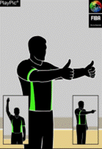 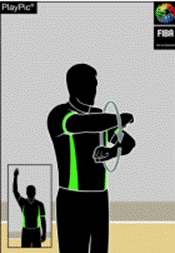
NEDOVOLENÝ DRIBLINK – PŘENÁŠENÝ MÍČ (16)
Tímto přestupkem rozumíme pohyb ruky, která se při driblinku dostane pod míč a ten chvilku zůstane ležet na dlani driblujícího. Přestupek je typický u mládeže či u začátečnického basketbalu. Při porušení uvedeného rozhodčí zapíská, provede 1x poloviční rotaci dlaně z boku před tělo a zpět.
ŠTV - přestupek pískáme i s posouzením jakékoliv výhody získané tímto pohybem. U mládeže nastává častěji tehdy, pokud chce útočící hráč s míčem získat zmíněnou nelegální výhodu proti svému obránci.
NEDOVOLENÝ DRIBLINK – DVOJITÝ DRIBLINK (17)
Driblinkem rozumíme pohyb živého míče, který má hráč pod kontrolou a kterým dribluje po podlaze (míč může rovněž házet, kutálet, odrážet). Driblink končí chycením míče do dvou rukou nebo jeho spočinutím na dlani jedné ruky. Zahájí-li hráč poté driblink znovu, rozhodčí zapíská, zvedne ruku s otevřenou dlaní a následně částečně nataženými pažemi hmitáním před tělem signalizuje daný přestupek. U začátečníků se můžeme setkat i s paralelním odrážením míče oběma rukama, což má stejný pravidlový důsledek. Náhodné vypadnutí míče a následný driblink není považováno za porušení pravidel, což se v praxi vztahuje zejména k následnému driblinku po nedokonalém chycení přihrávky.
ŠTV - doporučujeme tento přestupek pískat s výjimkou uvedeného náhodného vypadnutí
míče.
16 17
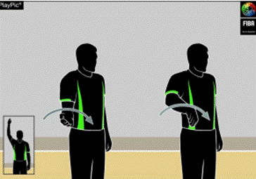 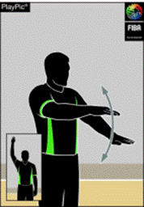
MÍČ ZAHRANÝ DO ZADNÍ ČÁSTI HŘIŠTĚ (18)
Družstvo mající živý míč pod kontrolou ve přední polovině hřiště se nemůže vrátit s míčem na svou zadní polovinu. Do přední poloviny se driblující hráč dostane tehdy, pokud jsou obě jeho dolní končetiny a míč na přední polovině. Pravidlo má vícero výkladových situací, které nevyužijeme ve ŠTV. V případě porušení pravidla rozhodčí zapíská, vzpaží ruku s otevřenou dlaní a následně provede pohyb mávnutí ruky před tělem s nataženým ukazováčkem tam a zpět.
ŠTV - pozor na záměnu signalizace s přestupkem nedovolený driblink – přenášený míč.
ÚMYSLNÉ KOPNUTÍ NEBO BLOKOVÁNÍ MÍČE NOHOU (19)
Hráč nesmí do míče úmyslně kopat nebo jej blokovat kteroukoliv částí nohy. V praxi jde většinou o zabránění přihrávky a tedy aktivní pohyb dolní končetiny obránce. Náhodný dotyk nohou se za přestupek nepovažuje. V případě porušení pravidla rozhodčí zapíská, vzpaží ruku s otevřenou dlaní a následně si ukáže na dolní končetinu.
ŠTV - spadne-li hráči míč na nohu neúmyslně při driblinku, nepískáme a hra pokračuje. Při signalizaci přestupku nezvedáme dolní končetinu a rovněž nesklápíme hlavu.
18 19
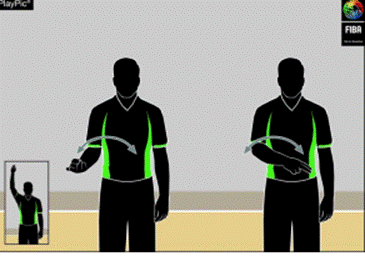 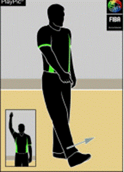
Časové
přestupky
3 VTEŘINY (20)
Hráč nesmí zůstat v soupeřově vymezeném území (slangově šestce či paintu) déle než 3 po sobě jdoucí vteřiny, jestliže má jeho družstvo živý míč pod kontrolou a běží hodiny hry. Po uplynutí tohoto intervalu musí hráč vyšlápnout oběma nohama mimo toto území s opakovanou možností návratu do prostoru. Přestupek je typický pro podkošové hráče. Při časově delším pohybu hráče bez míče v daném území tedy rozhodčí zapíská a ze vzpažení s otevřenou dlaní provede předpažení (mávnutí) ruky před trup s třemi nataženými prsty.
ŠTV - hráči jsou většinou prvně upozorněni verbálně od rozhodčího s cílem minimalizovat tento přestupek, rovněž bereme zřetel na hráče již vybíhajícího z vymezeného území, kterého necháme prostor bez následků opustit.
5 VTEŘIN (21)
S přestupkem se můžeme setkat ve třech základních variantách:
● Těsně bráněný hráč (obránce je ve vzdálenosti méně než 1 m od něj a v aktivním obranném postavení) musí do daného intervalu začít driblovat, vystřelit na koš či přihrát.
● Hráč vhazující míč z autu (zpoza koncové či postranní čáry) musí přihrát do 5 vteřin.
● Hráč provádějící trestné hody musí v daném intervalu provést střelu na koš.
Při porušení uvedeného rozhodčí zapíská, zvedne ruku s otevřenou dlaní a následně ukáže ve výši mezi ramenem a hlavou 5 prstů.
ŠTV - pravidlo považujeme za nadstavbové a nedoporučujeme aplikaci u začátečníků. V kontextu první uvedené varianty často dochází k přestupku kroky či osobní chybě bránícího hráče, třetí varianta přestupku je velmi okrajová a je vhodné střelce prvně varovat.
20 21
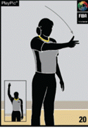 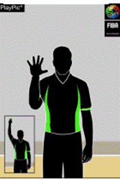
8 VTEŘIN (22)
Družstvo se musí dostat ze své zadní poloviny do přední do 8 vteřin od zisku živého míče, po obdrženém koši či přestupku soupeře na jeho útočné polovině. Při porušení uvedeného rozhodčí zapíská, zvedne ruku s otevřenou dlaní a následně ukáže ve výši mezi ramenem a hlavou na dlaních rukou 8 prstů.
ŠTV - pravidlo je poměrně složité a pro ŠTV nám stačí jeho základní výklad, který je zmíněn zde výše, v případě plynulosti hry je nemusíme ve ŠTV aplikovat.
24 VTEŘIN (23)
Družstvo má 24 vteřin od zisku míče na provedení střeleckého pokusu na koš soupeře, přičemž musí v případě neúspěšného pokusu alespoň zasáhnout obroučku koše pro zisk nového intervalu 14 vteřin na další střelecký pokus. Pravidlo je poměrně složité, má mnoho alternativ, které však neuplatníme ve ŠTV. V případě porušení pravidla rozhodčí zapíská, vzpaží ruku s otevřenou dlaní a následně sklopí předloktí směrem k rameni.
ŠTV - v rámci ŠTV zpravidla nedochází k tomuto přestupku, neb do hry nejsou aplikovány herní systémy se kterými se setkáváme v soutěžním basketbalu. Pokud by docházelo ke zdržování hry v útočné fázi, jako efektivní se ukazuje verbální instrukce s časem pro družstvo do konce časového limitu pro střelu (10,5,3).
22 23
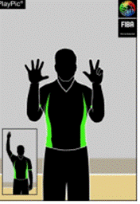 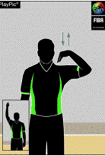
Další pravidla a signalizace
SMĚR HRY, MÍČ V ZÁMEZÍ (24)
Po odpískaném přestupku, nestřelecké chybě je nutné vždy po vlastní signalizaci ukázat následný směr hry.
BODOVÁ HODNOTA KOŠE (25)
Dvoubodovou (jednobodovou) hodnotu koše není potřeba ve ŠTV signalizovat, rozhodčí zpravidla podává verbální informaci o bodovém stavu hry, tříbodový pokus a následně jeho uznání ukazujeme vzpažením jedné ruky s třemi nataženými prsty a v úspěšném případě následnou identickou činností druhé ruky.
24 25
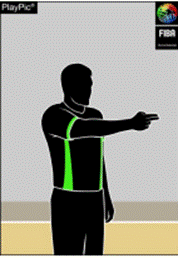 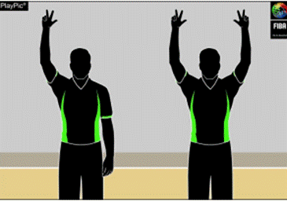
ZRUŠENÍ DOSAŽENÉHO KOŠE (26)
Neplatí-li koš např. z důvodu střely po čase, porušení pravidla o krocích … rozhodčí zapíská a rozpaží ruce před tělem v úrovni hrudníku. Následné vhazování míče se provádí proti čáře trestného hodu.
STŘÍDÁNÍ (27)
V basketbalu je povoleno pouze tehdy, pokud neprobíhá hra, míč je tzv. mrtvý. Ve ŠTV lze tento proces realizovat i hokejově, tzn. během hry dle domluvených principů (např. v momentě získání míče pod kontrolu po obranném doskoku) s cílem ponechat hře její spád. Způsob signalizace = zkřížené ruce před tělem.
26
27
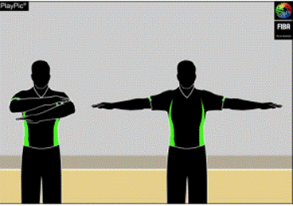 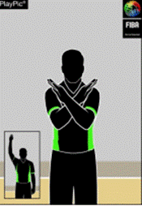
Výtah k této kapitole proveden z pravidel basketbalu (FIBA, 2022), kde lze nalézt i další podrobnosti.
●
úroveň 1 (vyučovací hodina TV, začátečník)
Každé rozhodnutí je ve funkci rozhodčího coby reakce na porušení pravidel hry v utkání prezentováno ve třech krocích.
● Rozhodčí zapíská.
● Verbálně sdělí o jaké porušení pravidel se jedná (př. faul = strčení nebo přestupek = kroky).
● Ukáže, jak bude pokračovat hra (2 trestné hody či směr vhazování z nejbližšího místa v zámezí …); případně sdělí barvu dresů družstva, které je oprávněno ke hře - př. “tmavá hraje”.
●
úroveň 2 (meziškolní turnaj, pokročilý)
● Rozhodčí zapíská a buď v případě chyby = “faulu” vzpaží ruku se sevřenou pěstí a nebo v případě přestupku ruku nevzpaží a pokračuje druhým bodem níže.
● Signalizuje typ chyby = “faulu” (př. strčení = naznačí oběma rukama strčení) a nebo naznačí typ přestupku (př. kroky = provede rotaci předloktí před tělem), což lze podpořit i verbálním komentářem.
● Ukáže, jak bude pokračovat hra (2 trestné hody X směr vhazování druhého družstva z nejbližšího místa v zámezí).
Základní signál při odpískané chybě / “faulu” Základní signál při odpískání přestupku
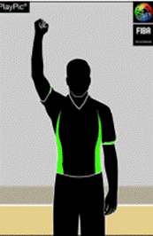
Po zvládnutí a zautomatizování prvních dvou uvedených postupů lze doplnit do rozhodování i oficiální signalizaci přestupku ve hře.
Veškeré obrázky FIBA. (2022)